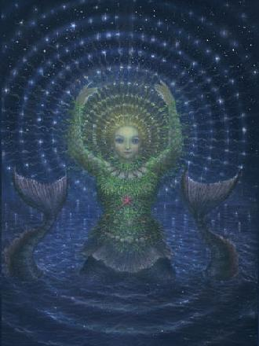
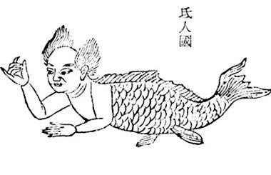
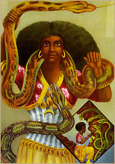

Legends and Myths Around the World
Ancient Greece
Atargatis, the greek goddess of Aniquity is sometimes referred to as the first mermaid. After she unintentionally killed her mortal love, she threw herself into a lake and turned into a "fish", but her beauty remained. She is sometimes referred to as "the mermaid goddess".
Europe
Many European cultures have myths and fairytales about Mermaids. Perhaps the most famous story is the novel The Little Mermaid written by Hans Christian Anderson in 1837.

China
Myths of mermaids in China date back to 4th century BC. According to these myths, mermaids tears turn to pearls.
Africa
Many African cultures have myths about evil water spirits. These spirits, which usually take female form, lure men to their deaths. The most powerful water spirit is "Mami Wata" which translates to "Mother Water".
All this information is from Wikipedia--the worlds most reliable source. For more information visit the link below:
More Mermaid Myths